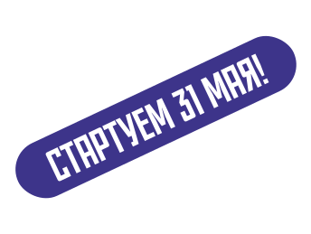

День Московского спорта


Москва снова
станет столицей спорта
Вас ждут события по всему городу:
СК «Лужники»
Пушкинская
площадь
площадь
Старый Арбат и другие
знаковые улицы города
знаковые улицы города
дни спорта
31.05
05.07
20.09
Ночи спорта
31.05
05.07
02.08
16.08
21.09